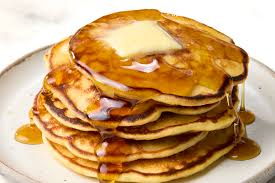

Home
Pancakes

Pancakes are a classic breakfast dish made from a simple batter of
flour, milk, eggs, and a leavening agent, cooked on a griddle until fluffy and golden.
Ingredients
- 1 cup of all-purpose flower
- 2 tbsp of sugar
- 1 tsp of baking powder
- 1/2 tsp of baking soda
- 1/4 tsp salt
- 3/4 cup milk
- 1 large egg
- 2 tbsp of melted butter
Steps Need to make this
- Mix dry Ingredients
- In another bowl, whisk milk, egg , and melted butter. Combine the dry the Ingreidents
- Heat a greased skillet over meduim heat, Pour 1/4 cup butter for each pancake
- Flip when bubbles form on the surfacea and cook untill golden brown
- Serve with syrup and enjoy!